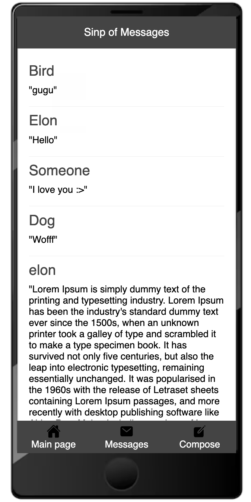

Building a Simple Message Bank Web Application with Flask: A Step-by-Step Tutorial
Table of Contents
1. Introduction
2. Document composition
2.1 templates
2.1.1 base.html
2.1.2 main.html
2.1.3 submit.html
2.1.4 view.html
2.2 app.py
2.3 static (style.css)1. Introduction
Welcome to this tutorial where you’ll learn how to create a simple web application using Flask. In this blog post, I’ll guide you through the process of building a message bank web app from scratch and describe each step along the way. By the end of this tutorial, you’ll have a basic understanding of Flask fundamentals, database skills, and how to apply basic CSS to enhance the appearance of your web app.
You are free to build on any of the examples, as well as any other resources you are able to find.
You can find the code for this tutorial here: https://github.com/jamie1130/PIC-16B
Let’s take a peek at what this website can do!
This is the first thing you would see when you open the page, the Main page:
Then you can either view other’s messages by click Messages at the bottom or compose one by yourself. Let’s try to write one:
Message sent:
And it will be stored in the message bank and you can view it when you want:

At the third row you can see your message!
2. Document composition
Some preparation:
First we are going to deal with the webpage structure using Jinjia template and the logic behind it using Flask.
A few things you might want to know before we proceed:
Jinja is a modern and designer-friendly templating engine for Python programming language. It is widely used in web development with frameworks like Flask and Django.
A Jinja template is a text file containing a mixture of static text and template tags, which are special syntax blocks or expressions recognized by the Jinja engine. These template tags allow you to inject dynamic content, perform control flow operations, and execute logic directly within your HTML or other text-based documents.
Here are some key features of Jinja templates:
Template Inheritance: Jinja supports template inheritance, allowing you to define a base template with common layout and structure, and then extend or override specific sections in child templates.
Variables: You can use variables within your templates to insert dynamic content. These variables are typically passed from the Python code to the template during rendering.
Control Structures: Jinja provides control structures like loops and conditionals, allowing you to perform logic and iterate over data directly within your templates.
Filters: Filters allow you to modify the output of variables in your templates. For example, you can apply filters to format dates, convert strings to uppercase, or perform other transformations.
Macros: Macros are reusable blocks of code that can be defined once and called multiple times within a template. They are similar to functions in programming languages.
Comments: Jinja templates support comments, allowing you to add explanatory notes or reminders within your template files.
Overall, Jinja templates provide a powerful and flexible way to generate dynamic content for web applications, making it easier to separate presentation logic from application logic.
Flask is a lightweight and flexible web framework for Python. It is designed to make getting started with web development quick and easy, while still being powerful enough to build complex web applications.
Key features of Flask include:
Minimalistic: Flask is minimalist by design. It provides only the essential components needed for web development, allowing developers to add functionality as needed through extensions.
Easy to Use: Flask is known for its simplicity and ease of use. Its API is intuitive and straightforward, making it a great choice for beginners and experienced developers alike.
Extensible: Flask is highly extensible. It provides a modular architecture that allows developers to easily add third-party extensions to add additional functionality to their applications.
Werkzeug and Jinja2 Integration: Flask is built on top of the Werkzeug WSGI toolkit and the Jinja2 template engine. Werkzeug provides low-level utilities for handling HTTP requests and responses, while Jinja2 provides a powerful and flexible templating engine for generating HTML and other text-based documents.
Development Server: Flask comes with a built-in development server, allowing developers to test their applications locally during development.
RESTful Request Dispatching: Flask supports RESTful request dispatching out of the box, making it easy to build RESTful APIs.
Built-in Development and Debugging Tools: Flask provides built-in development and debugging tools, including a built-in debugger and support for interactive debugging in the Python shell.
Overall, Flask is a popular choice for web development in Python due to its simplicity, flexibility, and extensibility. It is widely used for building web applications, APIs, and microservices.
Here you can find the tutorial of Jinja template: https://jinja.palletsprojects.com/en/3.1.x/templates/Links to an external site.
Here you can find the tutorial of Flask: https://flask.palletsprojects.com/en/2.2.x/quickstart/Links to an external site.
Ok now you have a basic idea of what Jinja and Flask are, you need to make sure that you have installed Flask in your environment. Jinja is one of the dependencies of Flask, and Flask installs it automatically when you install Flask using pip. Flask relies on Jinja for its templating engine, so it includes Jinja as part of its package.
In terminal:
pip install FlaskThen run the following:
export FLASK_ENV=developmentSetting FLASK_ENV to development tells Flask to run the application in development mode. In development mode, Flask enables additional features and behaviors that are helpful during the development process.
After this, create a file and name whatever you want and that is the place we are going to operate and everything happened inside this file.
2.1 templates
Create a file inside it and named it templates.
templates directory: This directory contains HTML templates that Jinja uses to render dynamic content. Templates typically include HTML markup along with Jinja template tags and expressions for inserting dynamic content, variables, control structures, and more. When you call render_template() in app.py, Flask looks for templates in the templates directory by default.
Since our webpage would have 3 pages and each cooresponds to a html: - main page (main.html): the page that we see first - submit page (submit.html): the page that we can compose our messages and submit it - view page (view.html): the messages in the bank
Now we are going to see it one-by-one.
2.1.1 base.html
base.html typically serves as the base or parent template in a Flask application’s template hierarchy. It contains the common structure, layout, and elements that are shared across multiple pages of a website or web application.
<!DOCTYPE html>
<link rel="stylesheet" href="{{ url_for('static', filename='style.css') }}" />
<title>{% block title %}{% endblock %} - Message Hub</title>
<div class="container">
<div class="title">{% block header %}{% endblock %}</div>
<div class="content">
{% block content %}{% endblock %}
</div>
<div class="nav-bar">
<a href="{{ url_for('main') }}" class="operation">
<img class="icon" src="../static/home.svg" />
<span>Main page</span>
</a>
<a href="{{ url_for('view') }}" class="operation">
<img class="icon" src="../static/message.svg" />
<span>Messages</span>
</a>
<a href="{{ url_for('submit') }}" class="operation">
<img class="icon" src="../static/create.svg" />
<span>Compose</span>
</a>
</div>
</div>The code block defines the basic structure of the website, which includes a title of Message Hub at the top, then there is a container that contains title, content, and a nav-bar that includes there buttons: Main page, Message, and Compose, where each button has a icon that is in the static folder, we will mention it later.
<!DOCTYPE html>: This is a document type declaration that specifies the HTML version being used. It tells the web browser which version of HTML the document is written in.<link rel="stylesheet" href="{{ url_for('static', filename='style.css') }}" />: This line includes an external CSS stylesheet namedstyle.cssinto the HTML document. Theurl_for()function is a Flask helper function that generates a URL for a given endpoint. Here, it generates the URL for the static filestyle.csslocated in thestaticdirectory of the Flask application.<title>{% block title %}{% endblock %} - Message Hub</title>: This line sets the title of the HTML document. The{% block title %}{% endblock %}part is a Jinja template block that serves as a placeholder for child templates to provide a title specific to each page. The- Message Hubtext is a static part of the title that is common across all pages.<div class="container">: This line starts a containerdivelement with the CSS classcontainer. It’s used to wrap the content of the page and apply styling or layout rules.<div class="title">{% block header %}{% endblock %}</div>: This line defines adivelement with the CSS classtitle. The{% block header %}{% endblock %}part is a Jinja template block that serves as a placeholder for child templates to provide a header specific to each page.<div class="nav-bar">...</div>: This line defines adivelement with the CSS classnav-bar, which typically contains navigation links. Inside thisdiv, there are anchor (<a>) elements representing navigation links to different pages of the website. Thehrefattributes of these anchor elements use theurl_for()function to generate URLs for the corresponding endpoints in the Flask application.
Overall, this base.html template provides a common layout structure for HTML pages in the Flask application, with placeholders for dynamic content such as page titles, headers, and main content. Child templates can extend this base template and fill in the content blocks with specific content relevant to each page.
2.1.2 main.html
This would be the first page that you see when open the webpage. It would be like this:
The code looks like
{% extends 'base.html' %}
{% block title %}Overview{% endblock %}
{% block header %}Message Hub{% endblock %}
{% block content %}
<div class="welcome-messages">
<div>Welcome to Message Hub!</div>
<div>At here, you can either comspanose a message by yourself or view messages in the hub. Hope you will enjoy it!</div>
</div>
{% endblock %}Let’s break down each part:
{% extends 'base.html' %}: This line specifies that the current template extends the base templatebase.html. It means that the content of the current template will replace the corresponding blocks in the base template.{% block title %}Overview{% endblock %}: This block overrides thetitleblock defined in the base template. It sets the title of the HTML document to “Overview”. The content between{% block title %}and{% endblock %}will replace the corresponding block in the base template.{% block header %}Message Hub{% endblock %}: This block overrides theheaderblock defined in the base template. It sets the header of the page to “Message Hub”. Similar to thetitleblock, the content between{% block header %}and{% endblock %}will replace the corresponding block in the base template.{% block content %}...{% endblock %}: This block overrides thecontentblock defined in the base template. It provides specific content for the main content area of the page. In this case, it contains a<div>element with the classwelcome-messagesand two paragraphs of text welcoming users to the Message Hub.
By using the extends keyword and defining blocks within the child template, you can create modular and reusable templates in Flask applications.
2.1.3 submit.html
The submit page would contain 3 components: 1. A text box for submitting a message. 2. A text box for submitting the name of the user. 3. A “submit” button.
The page looks like this:
The code looks like this:
{% extends 'base.html' %}
{% block header %}
{% block title %}New Message{% endblock %}
{% endblock %}
{% block content %}
<form action="/submit" method="post" class="form">
<div class='form-item form-item-name'>
<label for="name">Your Name or Handle:</label>
<input type="text" id="name" name="name" required>
</div>
<div class='form-item form-item-message'>
<label for="message">Your Message:</label>
<textarea id="message" name="message" required></textarea>
</div>
<button type="submit">Submit Message</button>
</form>
{% if thanks %}
<div class="success">
Message Sent
</div>
{% endif %}
{% endblock %}Let’s break down each part:
{% extends 'base.html' %}: This line specifies that the current template extends the base templatebase.html. It means that the content of the current template will replace the corresponding blocks in the base template.{% block header %}...{% endblock %}: This block overrides theheaderblock defined in the base template. Inside this block, there is another block calledtitle. This nested block defines the title of the HTML document to be “New Message”. The content between{% block header %}and{% endblock %}will replace the corresponding block in the base template.{% block content %}...{% endblock %}: This block overrides thecontentblock defined in the base template. It provides specific content for the main content area of the page. In this case, it contains an HTML form with input fields for the user’s name (or handle) and message, along with a submit button. Below the form, there is an{% if thanks %}condition, which checks if thethanksvariable is set to true. If it is, a success message “Message Sent” is displayed and we are going to see this variable soon in theapp.py.
2.1.4 view.html
This one would be easier since it only contains the messages we retrived from the data base.
The page would looks like this: 
The code looks like this:
{% extends 'base.html' %}
{% block header %}
{% block title %}Sinp of Messages{% endblock %}
{% endblock %}
{% block content %}
<div class="message-container">
{% for tuple in message_tuples%}
<div class="message">
<div class="message-owner">{{tuple[0]}}</div>
<div class="message-content">"{{tuple[1]}}"</div>
</div>
{% endfor %}
</div>
{% endblock %}Let’s break down each part:
{% extends 'base.html' %}: This line specifies that the current template extends the base templatebase.html. It means that the content of the current template will replace the corresponding blocks in the base template, just like before.{% block header %}...{% endblock %}: This block overrides theheaderblock defined in the base template. Inside this block, there is another block calledtitle. This nested block defines the title of the HTML document to be “Sinp of Messages”. The content between{% block header %}and{% endblock %}will replace the corresponding block in the base template.{% block content %}...{% endblock %}: This block overrides thecontentblock defined in the base template. It provides specific content for the main content area of the page. In this case, it contains a<div>element with the classmessage-container, which serves as a container for displaying messages.Inside the
message-containerdiv, there is a for loop that iterates over a list ofmessage_tuples. For each tuple in the list, it generates a<div>element with the classmessage, containing two inner<div>elements:<div class="message-owner">{{tuple[0]}}</div>: This div displays the owner of the message. It accesses the first element of the tuple using{ tuple[0] }Jinja syntax.<div class="message-content">"{{tuple[1]}}"</div>: This div displays the content of the message. It accesses the second element of the tuple using{ tuple[1] }Jinja syntax. The content is enclosed in double quotes.
We will see why we get the data this way once we know how the data were stored.
2.2 app.py
This is the main Python script where you define your Flask application. In app.py, you define routes, configure the application, and handle requests. Jinja is used in conjunction with render_template() function calls in app.py to render HTML templates dynamically.
First let’s import libraries we are going to use:
from flask import Flask, g, render_template, request
from flask import redirect, url_for
import sqlite3
import pandas as pdThen creates a Flask application instance by:
app = Flask(__name__)Here’s what it does:
Creates an Application Instance: The
Flask()constructor creates a new Flask application instance. This instance represents your web application and allows you to configure routes, define view functions, handle HTTP requests, and more.__name__Argument: The__name__argument is a special Python variable that represents the name of the current module. When you use__name__as an argument in theFlask()constructor, Flask uses it to determine the root path of the application’s resources, such as templates and static files. It’s important to note that__name__is different depending on whether the Python script is being run as the main program or imported as a module.Assigns the Application Instance to
app: The resulting Flask application instance is assigned to the variableapp, which you can then use throughout your Flask application to define routes, configure settings, and run the application.
@app.route('/')
def main():
return render_template('main.html')In Flask, @app.route('/') is a decorator that is used to define a route for a specific URL.
Here’s how it works:
@app.route('/'): This line decorates the following function,main(), indicating that the function should be executed when a request is made to the root URL'/'. The@app.route()decorator takes the URL pattern as its argument. In this case,'/'represents the root URL of the Flask application.def main():: This is the definition of themain()function. This function is executed when a request is made to the root URL'/'.return render_template('main.html'): Inside themain()function,render_template()is called with the argument'main.html'. This function renders the specified HTML template,main.html, and returns the resulting HTML content as the response to the client’s request.render_template()is a function provided by Flask that renders HTML templates. It looks for the specified template file in thetemplatesdirectory of the Flask application and processes any Jinja template tags or blocks contained within the template file.
In summary, the code @app.route('/') decorates the main() function, specifying that it should be executed when a request is made to the root URL '/'. When this route is accessed, the main() function returns the contents of the main.html template to the client’s web browser.
@app.route("/submit/", methods=['POST', 'GET'])
def submit():
if request.method == 'GET':
return render_template('submit.html')
else:
insert_message(request)
return render_template('submit.html', thanks = True)This code is a Flask route definition for handling requests to the URL “/submit/” with both GET and POST methods.
Here’s how it works:
@app.route("/submit/", methods=['POST', 'GET']): This decorator defines a route for the URL “/submit/” and specifies that it should handle both GET and POST requests. Themethodsargument is a list containing the HTTP methods that this route should accept.def submit():: This is the definition of thesubmit()function, which will be executed when a request is made to the “/submit/” URL.if request.method == 'GET':: This conditional statement checks if the HTTP request method is GET. If it is, it means that the user is accessing the “/submit/” page via a GET request (e.g., by typing the URL into their browser’s address bar or following a link). In this case, the function returns the rendered template ‘submit.html’ usingrender_template(). This template likely contains a form that users can fill out to submit a message.else:: If the request method is not GET, it means that it is a POST request (e.g., the user submitted the form). In this case, the function callsinsert_message(request)to handle inserting the submitted message into the database. After inserting the message, it returns the rendered template ‘submit.html’ again, this time passing in an additional variablethanks = True. This variable is used to display a message on the page indicating that the message was successfully submitted.
In summary, this route handler allows users to access the “/submit/” page via both GET and POST requests. If accessed via GET, it renders the ‘submit.html’ template containing a form. If accessed via POST (i.e., when the form is submitted), it inserts the submitted message into the database and renders the ‘submit.html’ template again, this time displaying a message indicating that the message was successfully submitted.
@app.route("/view/")
def view():
rdm_mesg = random_messages(5)
length = 5
message_tuples = []
for i in range(length):
message_tuples.append(tuple(rdm_mesg.iloc[i,:]))
return render_template('view.html', message_tuples = message_tuples)This code defines a Flask route for handling requests to the URL “/view/”.
Here’s how it works:
@app.route("/view/"): This decorator defines a route for the URL “/view/”. When a request is made to this URL, the associated function,view(), will be executed.def view():: This is the definition of theview()function, which handles requests to the “/view/” URL.rdm_mesg = random_messages(5): This line calls a functionrandom_messages()to retrieve a random selection of 5 messages. The exact implementation ofrandom_messages()is not shown, but it presumably retrieves random messages from some data source.length = 5: This line sets the variablelengthto 5, indicating the number of messages to retrieve.message_tuples = []: This line initializes an empty list calledmessage_tuples. This list will store tuples, where each tuple represents a message.for i in range(length):: This line starts a loop that iterateslengthtimes. It iterates through the range of numbers from 0 tolength - 1.message_tuples.append(tuple(rdm_mesg.iloc[i,:])): Inside the loop, this line retrieves a row from therdm_mesgDataFrame (presumably containing the random messages) usingrdm_mesg.iloc[i,:], converts it to a tuple, and appends it to themessage_tupleslist.return render_template('view.html', message_tuples = message_tuples): Finally, this line renders the ‘view.html’ template usingrender_template(). It passes themessage_tupleslist as a variable namedmessage_tuplesto the template. This allows the template to access and display the messages retrieved in the view function.
In summary, when a request is made to the “/view/” URL, the view() function retrieves a random selection of messages, converts them to tuples, and passes them to the ‘view.html’ template for rendering. The template can then display these messages to the user.
As you might noticed, there are functions we need to write that appeared in front:
def get_message_db():
try:
# gets datbase from `g` object
return g.message_db
except:
g.message_db = sqlite3.connect("messages_db.sqlite")
cursor = g.message_db.cursor()
cmd = """
CREATE TABLE IF NOT EXISTS messages(
handle TEXT,
message TEXT
);
"""
cursor.execute(cmd)
cursor.close()
return g.message_dbThis Python function get_message_db() serves the purpose of managing the database connection for the Flask application.
Here’s how it works:
Try-Except Block: The function first attempts to retrieve the database connection from the
gattribute of the Flask application context. Thegobject is a special object provided by Flask for storing global variables during the lifetime of a request. If the database connection is already present ing, it is returned immediately.If the database connection is not found in
g, theexceptblock is executed.Database Connection: Inside the
exceptblock, a new SQLite database connection is established usingsqlite3.connect(). The database file is specified as"messages_db.sqlite". This creates a new SQLite database file if it doesn’t already exist.Table Creation: After establishing the database connection, the function checks whether a table named “messages” exists in the database. If the table doesn’t exist, it creates it using the SQL command specified in the
cmdvariable. This command creates a table with two columns:handleandmessage, both of typeTEXT.Cursor Operation: The function creates a cursor using
g.message_db.cursor()to execute SQL commands. It then executes theCREATE TABLEcommand to create the “messages” table if it doesn’t exist.Closing Cursor: After executing the SQL command, the cursor is closed using
cursor.close()to free up resources.Returning Database Connection: Finally, the function returns the database connection stored in
g.message_db. This ensures that subsequent calls toget_message_db()within the same Flask request context reuse the same database connection.
In summary, get_message_db() ensures that a database connection is established, a “messages” table is created if it doesn’t exist, and returns the database connection for use in other parts of the Flask application.
def insert_message(request):
# Extract the message and the handle from request
handle = request.form['name']
message = request.form['message']
# Connect to the message database
db = get_message_db()
# Insert message into the messages table
cursor = db.cursor()
cursor.execute("INSERT INTO messages (handle, message) VALUES (?, ?)", (handle, message))
# Commit changes to the database
db.commit()
# Close the database connection
db.close()
# Return the message and the handle
return message, handleThis Python function insert_message(request) is responsible for handling the insertion of a user message into the database of messages.
Here’s a breakdown of how it works:
Parameter Explanation: The docstring also explains that the function takes a
requestobject as a parameter. Thisrequestobject contains form data submitted by the user.Extracting Message and Handle: The function extracts the message and handle from the
requestobject usingrequest.form['name']andrequest.form['message'], respectively. These values correspond to the form fields named “name” and “message” submitted by the user.Database Connection: The function connects to the message database using the
get_message_db()function. This function ensures that a database connection is established and returns the connection.Inserting Message: The function creates a cursor using
db.cursor()to execute SQL commands. It then executes an SQLINSERTstatement to insert the message and handle into the “messages” table of the database. TheVALUES (?, ?)part of the statement indicates that the values are provided as parameters, which helps prevent SQL injection attacks.Committing Changes: After inserting the message into the database, the function commits the changes using
db.commit(). This ensures that the changes are saved permanently in the database.Closing Database Connection: Finally, the function closes the database connection using
db.close(). Closing the connection frees up resources and prevents potential issues with concurrent access to the database.Returning Message and Handle: The function returns a tuple containing the message and handle. This allows the caller to access these values if needed.
In summary, insert_message(request) handles the insertion of user messages into the database by extracting the message and handle from the request, inserting them into the database, committing the changes, closing the database connection, and returning the message and handle.
def random_messages(n):
db = get_message_db()
cmd = f""" SELECT * FROM messages ORDER BY RANDOM() LIMIT {n}; """
rdm_mesg = pd.read_sql_query(cmd, db)
db.close()
return rdm_mesgThis Python function random_messages(n) retrieves a random selection of messages from the database of messages.
Here’s a breakdown of how it works:
Database Connection: The function first connects to the message database using the
get_message_db()function. This function ensures that a database connection is established and returns the connection.SQL Command: The function constructs an SQL command to select a random sample of messages from the “messages” table. The
ORDER BY RANDOM()clause ensures that the rows are returned in random order, and theLIMIT {n}clause limits the number of rows returned ton. Thef-stringsyntax is used to include the value ofnin the SQL command.Executing SQL Command: The function executes the SQL command using
pd.read_sql_query(), a function provided by the pandas library. This function executes the SQL query against the database connection (db) and returns the results as a pandas DataFrame (rdm_mesg).Closing Database Connection: After retrieving the random messages, the function closes the database connection using
db.close(). Closing the connection frees up resources and prevents potential issues with concurrent access to the database.Returning Random Messages: Finally, the function returns the pandas DataFrame
rdm_mesg, which contains the randomly selected messages.
In summary, random_messages(n) retrieves a random selection of messages from the database by executing an SQL query, reading the results into a pandas DataFrame, and returning the DataFrame containing the random messages.
2.3 static (style.css)
static directory: This directory contains static assets such as CSS, JavaScript, images, and other files that are served directly to clients without modification. While Jinja itself doesn’t directly interact with the static directory, Flask applications often use Jinja to generate URLs for static assets using the url_for() function. This allows you to reference static assets in your HTML templates in a way that’s flexible and consistent with your application’s routing.
html {
font-family: sans-serif;
background: #fff;
}
body {
max-width: 400px;
margin: auto;
}
.container {
width: 368px;
height: 780px;
padding: 39px 16px;
position: relative;
background-image: url(./phone_background.png);
background-size: cover;
/* background-repeat: no-repeat; */
/* background-size: 400px 800pwx; */
}
.title {
width: 368px;
height: 54px;
position: absolute;
left: 16px;
top: 36px;
font-size: 18px;
display: flex;
align-items: center;
justify-content: center;
color: #fff;
background-color: #444444;
}
.content {
padding: 20px;
margin: 54px 0;
height: 580px;
overflow-y: scroll;
}
.nav-bar {
position: absolute;
left: 16px;
bottom: 90px;
width: 368px;
height: 54px;
background-color: #444444;
display: flex;
justify-content: space-between;
align-items: center;
}
.operation {
width: calc(100% / 3);
height: 100%;
display: flex;
flex-direction: column;
align-items: center;
justify-content: center;
}
.operation:hover {
background-color: #333;
transition: all 0.3;
}
.icon {
color: #fff;
width: 24px;
height: 24px;
}
a {
color: #fff;
text-decoration: none;
}
.welcome-messages {
display: flex;
flex-direction: column;
gap: 18px;
font-size: 16px;
}
.welcome-messages > div:first-child {
font-size: 24px;
}
.welcome-messages > div:last-child {
line-height: 1.4;
}
.form {
display: flex;
flex-direction: column;
gap: 24px;
}
.form-item {
display: flex;
flex-direction: column;
gap: 12px;
}
input {
outline: none;
height: 24px;
}
textarea {
outline: none;
height: 120px;
resize: none;
}
button {
height: 24px;
}
.success {
margin-top: 22px;
color: green;
}
.message-container {
display: flex;
flex-direction: column;
gap: 9px;
}
.message {
display: flex;
flex-direction: column;
gap: 9px;
padding-bottom: 18px;
border-bottom: #eeeeee 1px solid;
}
.message:hover {
border-bottom: #555555 1px solid;
}
.message-owner {
font-size: 24px;
color: #444444;
}This is a CSS stylesheet defining various styles for different elements of a web page. Here’s a breakdown of the styles defined:
html: Sets the default font family to sans-serif and sets the background color to white.body: Sets the maximum width of the body to 400px and centers it horizontally using auto margins..container: Styles a container element with a fixed width and height, positioned relative to its containing block. It sets a background image and ensures it covers the entire container..title: Styles a title element with a fixed width and height, positioned absolutely within its containing block. It centers the text vertically and horizontally, sets the font size, and applies colors..content: Styles a content area with padding, margin, height, and overflow properties. It ensures that content exceeding the height is scrollable..nav-bar: Styles a navigation bar with a fixed position at the bottom of its containing block. It sets the background color and arranges its child elements horizontally with space-between alignment..operation: Styles individual navigation bar items, including width, height, and alignment properties. It changes the background color on hover..icon: Styles icons within navigation bar items, setting the color, width, and height.a: Styles anchor links, setting the color and removing the underline..welcome-messages: Styles a section containing welcome messages, arranging its child elements vertically with a gap between them..form: Styles a form element, arranging its child elements vertically with a gap between them..form-item: Styles form items, arranging their child elements vertically with a gap between them.inputandtextarea: Styles form input and textarea elements, removing their outline and setting their height and other properties.button: Styles buttons, setting their height..success: Styles a success message, setting its margin and color..message-container: Styles a container for messages, arranging its child elements vertically with a gap between them..message: Styles individual message elements, arranging their child elements vertically with a gap between them and adding a border..message:hover: Styles individual message elements on hover, changing the border color..message-owner: Styles message owner elements, setting the font size and color.
Overall, these styles define the appearance and layout of various elements on a web page, providing consistency and visual appeal.
Alright, we’ve completed all the tasks! Now you can get creative with your own message bank.